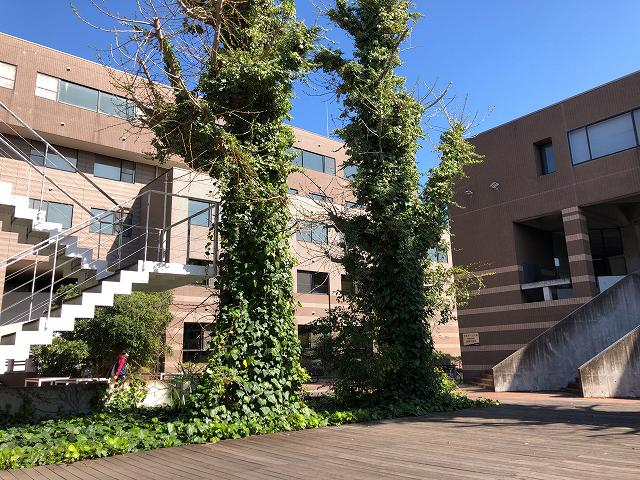

准教授の人が担当する加工実習のマシニングセンタ。加工実習と言いながらメインはCAD・CAMなので、オンラインで行けそう。といっても、マシニングセンタの動作は観て欲しい。 とのことで、工場が閉鎖される前に収録に行きました。
モニタ画面も撮影
忘れ物
フィルタとってきました。大事

工具交換はロマン
加工動画も
プログラムや加工モニタも
狭い窓から覗くより良いのでは？
誰も居ない、、、
休憩
動画編集
いろいろカット
工具交換はロマン！
鋳鉄ブロックは切削油いらないのでわかりやすい
| ・ MC (R02.04.10) | |||
准教授の人が担当する加工実習のマシニングセンタ。加工実習と言いながらメインはCAD・CAMなので、オンラインで行けそう。といっても、マシニングセンタの動作は観て欲しい。 とのことで、工場が閉鎖される前に収録に行きました。 |
|||
|
モニタ画面も撮影 |
忘れ物 | ||
|
フィルタとってきました。大事 |
工具交換はロマン | ||
|
加工動画も |
プログラムや加工モニタも | ||
|
狭い窓から覗くより良いのでは？ |

誰も居ない、、、 | ||
|
休憩 |
動画編集 | ||
|
いろいろカット |
工具交換はロマン！ | ||
|
鋳鉄ブロックは切削油いらないのでわかりやすい |
|||